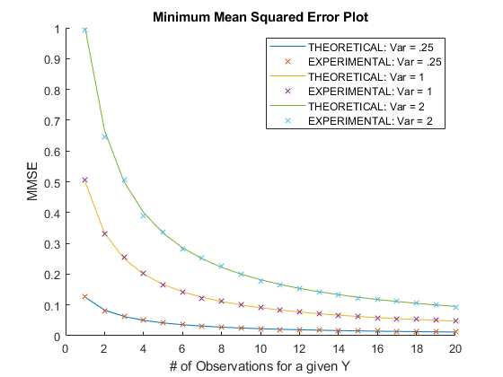

Contents
clc
clear
close all
Part 1 - Bayes MMSE and linear MMSE 8.5 and 8.6
N = 10^6;
Y = -1 + (2)*rand(1,N);
W = -2 + (4)*rand(1,N);
X = Y + W;
yHat = X;
yHat(X<-1) = 0.5+X(X<-1)*.5;
yHat(X>1) = -0.5+X(X>1)*.5;
yHat(X>-1 & X<1) = 0;
bayes = mean((Y-yHat).^2);
bayesMSE = mean(bayes);
linear = mean(Y) + (var(Y)/var(X)).*(X - mean(X));
linearMSE = mean((Y-linear).^2);
theobayesMSE = 1/4;
theolinearMSE = 4/15;
table = table([theobayesMSE;theolinearMSE],[bayesMSE;linearMSE],'VariableNames', ...
{'Theoretical','Experimental'},'RowNames',{'Bayes MSE','Linear MSE'});
disp(table)
Theoretical Experimental
___________ ____________
Bayes MSE 0.25 0.2499
Linear MSE 0.26667 0.26667
Part 2 - Estimation from an arbitrary number of noisy measurements 8.8
observations = 20;
sigmaR = [.5, 1, sqrt(2)];
sigmaY = [.5, 1, sqrt(2)];
theoretical = zeros(3, observations);
experimental = zeros(3, observations);
for j = 1:3
for i = 1:observations
[theoretical(j,i), experimental(j,i)] = twoNoisyEstimates(i, sigmaR(j), sigmaY(j));
end
end
figure(1);
hold on;
for j = 1:3
plot(1:observations, theoretical(j, :))
scatter(1:observations, experimental(j, :), 'X')
end
title("Minimum Mean Squared Error Plot")
xlabel("# of Observations for a given Y");
ylabel("MMSE");
legend("THEORETICAL: Var = .25", "EXPERIMENTAL: Var = .25", "THEORETICAL: Var = 1", "EXPERIMENTAL: Var = 1", "THEORETICAL: Var = 2", "EXPERIMENTAL: Var = 2")
function [theoretical, experimental] = twoNoisyEstimates(observations, sigmaR, sigmaY)
N = 10^4;
theoretical = (sigmaY^2 * sigmaR^2) / (observations * sigmaY^2 + sigmaR^2);
Y = normrnd(1, sigmaY, [N 1]);
R = normrnd(0, sigmaR, [N observations]);
X = zeros(N, observations);
for i = 1:observations
X(:,i) = R(:,i) + Y;
end
varR = mean(var(R'));
yH = (1 / (observations * var(Y) + varR)) * (varR * mean(Y) + var(Y) * sum(X, 2));
experimental = mean((Y-yH).^2);
end
